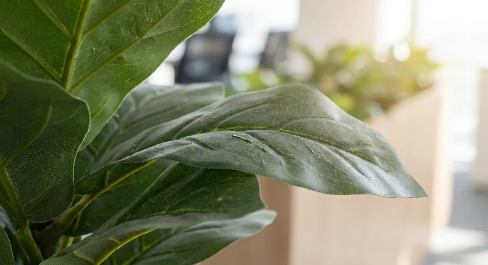

Green Without the Guilt: Why Commercial Artificial Plants Are Perfect for Your Office

In an increasingly digitised world, the desire to connect with nature remains strong. Introducing greenery into office spaces is known to boost morale, reduce stress, and even enhance productivity. The realities of office life — varying light conditions, busy schedules, and allergy concerns — often make maintaining live plants a formidable challenge. This is where high-quality commercial artificial plants step in, offering all the aesthetic benefits with none of the hassle.
Let's explore why synthetic foliage is becoming the smart choice for modern workplaces.
The Unbeaten Benefits of Artificial Greenery
1. Low Maintenance, High Impact
Forget watering schedules, pruning, or worrying about proper sunlight. Artificial plants require virtually no upkeep beyond occasional dusting, freeing up valuable staff time and resources. They look vibrant and healthy 365 days a year, consistently enhancing your office's aesthetic.
2. Allergy-Friendly & Pest-Free
For offices with employees sensitive to pollen or mould, artificial plants are a game-changer. They introduce no allergens into the environment and, unlike real plants, won't attract common office pests like gnats or spider mites — ensuring a cleaner, healthier workspace for everyone.
3. Consistent Aesthetics
Real plants can wilt, shed leaves, or outgrow their space. Artificial plants maintain their perfect form, colour, and size indefinitely. This consistency is crucial for branding and maintaining a polished, professional look across all areas of your office.
4. Design Versatility
Artificial plants know no limits. Place a lush palm in a windowless corridor, vibrant orchids in a dimly lit reception area, or a towering fig tree in a high-traffic common space. Their adaptability lets you incorporate greenery into any design scheme — regardless of natural light or humidity levels.
5. Cost-Effective Long-Term
While the initial investment may seem higher than a single live plant, consider the long-term savings: no replacement costs for dying plants, no professional plant care services, and no specialised equipment. Artificial plants are a one-time purchase that pays dividends for years. For a fuller breakdown, our Maintenance Savings Calculator models the 3-year total cost of ownership for your specific space.
Types of Artificial Plants for Every Office Nook
The market for artificial plants has evolved dramatically, offering incredibly realistic options for every need:
- Potted desk & floor plants — from elegant snake plants and succulents for individual workstations to commanding fiddle-leaf figs and monsteras for corners and common areas
- Artificial trees — make a grand statement in lobbies or open-plan offices with stunning olive trees, birches, or bamboo. These create an immediate sense of tranquillity and scale
- Green walls & vertical gardens — perfect for a dramatic, space-saving statement. These lush installations transform a blank wall into a vibrant focal point, often combining ferns, mosses, and varied foliage
- Trailing & hanging plants — add natural softness to shelves, cabinets, or overhead spaces with artificial Pothos, Ivy, or String of Pearls
- Flowering plants — introduce pops of colour with incredibly lifelike orchids, hydrangeas, or peonies, bringing a sophisticated touch to meeting rooms or executive offices

Smart Buying Tips for Your Office Greenery
To ensure your artificial plants enhance rather than detract from your office's professionalism, keep these tips in mind.
1. Realism Is Key
Prioritise quality. Look for plants made from high-grade PE (polyethylene) or premium silk blends, with varied leaf textures, natural-looking stems, and the subtle imperfections that mimic nature. Avoid anything that looks overly shiny or uniform — that's the giveaway tell of low-grade product.
2. Consider Scale and Placement
A tiny plant in a vast lobby will look lost; an oversized one can overwhelm a small desk. Measure your space and visualise how the plant will fit. Think about where real plants would thrive — that's a useful guide to placement that reads as natural rather than decorative.
3. The Right Planter Makes a Difference
Even the most realistic artificial plant can look cheap in a poor-quality pot. Invest in stylish, sturdy planters that complement your office décor — ceramic, terracotta, or modern metallic vessels elevate the entire display.
4. Curate Your Collection
Don't just buy a dozen of the same plant. Mix and match different types, sizes, and textures to create a dynamic, organic look — the same way you would with real plants.
5. Source from Reputable Suppliers
Commercial-grade artificial plants are engineered for durability and realism, with the documentation to back it up. Work with suppliers known for their quality, range, and NFPA 701 fire compliance — non-negotiable for commercial occupancy.
The bottom line: embracing commercial artificial plants allows your office to cultivate calm, enhance aesthetics, and create a healthier, more inviting atmosphere — all without the constant demands of real plant care. It's truly green without the guilt.
Bring effortless greenery to your office — zero maintenance, full impact
LaySun supplies artificial trees, green walls, and potted foliage for corporate offices, coworking spaces, and executive suites worldwide. Special-order fire-rating options are available for select products, with project- or order-specific documentation available upon request.
Commercial Solutions Browse Products Request a Quote →